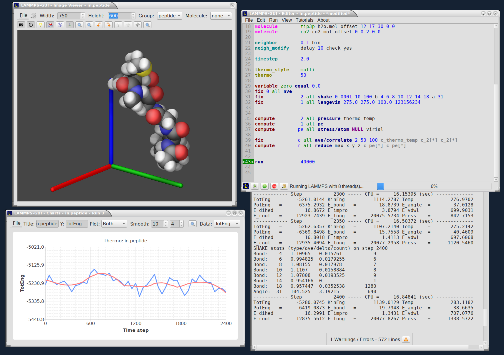

1. Overview¶
LAMMPS-GUI is a graphical text editor customized for editing LAMMPS input files that is linked to the LAMMPS C-library and thus can run LAMMPS directly using the contents of the editor’s text buffer as input. It can retrieve and display information from LAMMPS while it is running, display visualizations created with the dump image command, and is adapted specifically for editing LAMMPS input files through syntax highlighting, text completion, and reformatting, and linking to the online LAMMPS documentation for known LAMMPS commands and styles.
This is similar to what people traditionally would do to run LAMMPS but all rolled into a single application: that is, using a text editor, plotting program, and a visualization program to edit the input, run LAMMPS, process the output into graphs and visualizations from a command line window. This similarity is a design goal. While making it easy for beginners to start with LAMMPS, it is also the expectation that LAMMPS-GUI users will eventually transition to workflows that most experienced LAMMPS users employ.

Features have been extensively exposed to keyboard shortcuts, so that there is also appeal for experienced LAMMPS users for prototyping and testing simulation setups.
1.1. Features¶
A detailed discussion and explanation of all features and functionality are in the Howto_lammps_gui tutorial Howto page.
Here are a few highlights of LAMMPS-GUI
Text editor with line numbers and syntax highlighting customized for LAMMPS
Text editor features command completion and auto-indentation for known commands and styles
Text editor will switch its working directory to folder of file in buffer
Many adjustable settings and preferences that are persistent including the 5 most recent files
Context specific LAMMPS command help via online documentation
LAMMPS is running in a concurrent thread, so the GUI remains responsive
Progress bar indicates how far a run command is completed
LAMMPS can be started and stopped with a mouse click or a hotkey
Screen output is captured in an Output Window
Thermodynamic output is captured and displayed as line graph in a Chart Window
Indicator for currently executed command
Indicator for line that caused an error
Visualization of current state in Image Viewer (via calling write_dump image)
Capture of images created via dump image in Slide show window
Dialog to set variables, similar to the LAMMPS command-line flag ‘-v’ / ‘-var’
Support for GPU, INTEL, KOKKOS/OpenMP, OPENMP, and OPT accelerator packages
1.2. Parallelization¶
Due to its nature as a graphical application, it is not possible to use the LAMMPS-GUI in parallel with MPI, but OpenMP multi-threading and GPU acceleration is available and enabled by default.
1.3. Prerequisites and portability¶
Changed in version TBD.
LAMMPS-GUI version 1.7.1 and later is programmed in C++ based on the C++17 standard and using the Qt GUI framework. Currently, Qt version 5.15LTS or later is required; support for Qt version 6.x is available. Building LAMMPS with CMake (version 3.20 or later) is required.
The LAMMPS-GUI has been successfully compiled and tested on:
Ubuntu Linux 22.04LTS x86_64 using GCC 11, Qt version 5.15
Fedora Linux 41 x86_64 using GCC 14 and Clang 17, Qt version 5.15
Fedora Linux 42 x86_64 using GCC 15, Qt version 6.9
Apple macOS 12 (Monterey) and macOS 13 (Ventura) with Xcode on arm64 and x86_64, Qt version 5.15
Windows 10 and 11 x86_64 with Visual Studio 2022 and Visual C++ 14.36, Qt version 5.15
Windows 10 and 11 x86_64 with Visual Studio 2022 and Visual C++ 14.40, Qt version 6.7
Windows 10 and 11 x86_64 with MinGW / GCC 14.2 cross-compiler on Fedora 42, Qt version 5.15

{kind=link}